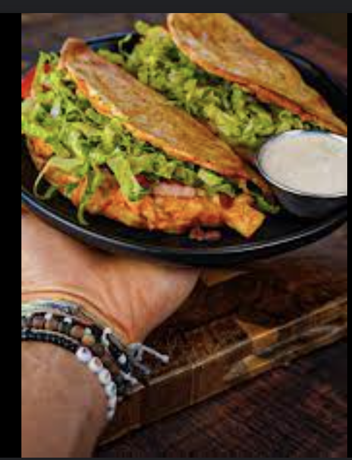

Buffalo Chicken Chalupas

Quick and Easy Buffalo Chicken Chalupas
A high protein dinner that is sure to satisfy and is ready in under 30 mins.
Using Josephs pita bread as our shell, these Chalupas are packed with chicken breast
that is covered in a healthy buffalo sauce! This cheesy dinner is sure to spice up dinner time.
Ingredients
- 2lbs Chicken Breast
- 1/3 Package of Ranch Dip Seasoning
- 170 grams Plain Non Fat Greek Yogurt
- 113 grams 2% Cottage Cheese
- 113 grams Franks Red Hot Buffalo Sauce
- 10 Josephs Pitas
- 100 gramns 2% Colby Jack Cheese
- 100 grams Part Skim Mozzarella
- Roma Tomato
- Shredded Lettuce
Steps
- Season chicken breast with ranch seasoning. Spray both sides with cooking spray and air fry on 400 degrees F for 9-10 mins
- While the chicken is cooking, make the buffalo sauce by adding greek yogurt, cottage cheese and franks red hot buffalo sauce into a small blender. Blend until smooth
- Chop up the chicken breast once it is finished and add it to a bowl. Combine with the buffulo sauce.
- To assemble the chalupas, lay one pita down and add 5 grams of 2% Colby Jack and 5 grams of Mozzarella. Then add 1/10th of the buffalo chicken dip, and then add another 5 grams of colby jack and 5 grams of mozzarella.
- Fold the chalupa tightly. Spray both sides with cooking spray and add to a air fryer on 400 degrees F for 4 mins. (Place some ramekins on top of each chalupa to make sure they stay closed)
- Once finished, open those bad boys up and add the tomato and lettuce.